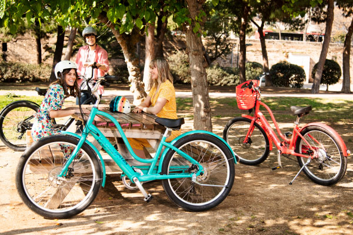

● Analyzed a dataset of movies (50K+ rows) using Python’s Pandas and NumPy libraries to uncover correlations between features.
● Quantified a strong positive correlation (0.75) between movie budget and gross earnings, emphasizing that larger budgets tend to drive higher earnings.
● Employed seaborn and matplotlib to visualize data with scatter plots and heatmaps, identifying patterns and relationships.
● Accomplished insightful data analysis on a European Soccer database of 230,000+ records by executing complex SQL queries and Python (Pandas, NumPy, Matplotlib) scripts.
● Visualized trends by plotting a graph illustrating average goals per game over 8 years, revealing scoring dynamics across Europe’s top 5 leagues.
● Employed subqueries and conditional functions to investigate player attributes, showcasing that players around 170cm exhibited the highest average potential.

● Revitalized the business strategy by analyzing and visually presenting Airbnb's annual 12-month dataset through a tableau dashboard, unveiling a striking 108% revenue surge from January's $1.01M to December's $2.11M.
● Guided timely marketing campaigns and pricing adjustments, capitalizing on peak-season profitability.

● Developed & administered the backend database (MySQL), designed the frontend website, and conducted rigorous testing.
● Generated an illustrative Entity-Relationship (ER) diagram to depict the database relationships visually.
● Segregated and normalized the database, significantly reducing data retrieval time by ~35%.
● Optimized the database by executing intricate SQL queries, store procedures, triggers, CRUD operations, data retrieval techniques, normalization, resulting in saving 12 hrs./resource monthly.

● Utilized Excel to construct a comprehensive dashboard for bike buyer analytics, integrating data cleaning and pivot tables for precise insights.
● Analyzed age demographics, revealing that peak purchasing activity occurred during middle age (31-54) with a remarkable 459% surge compared to young people (<31).
● Identified a substantial preference (56.3%) for short commutes of 0-2 miles among bike buyers, underscoring a critical target audience.